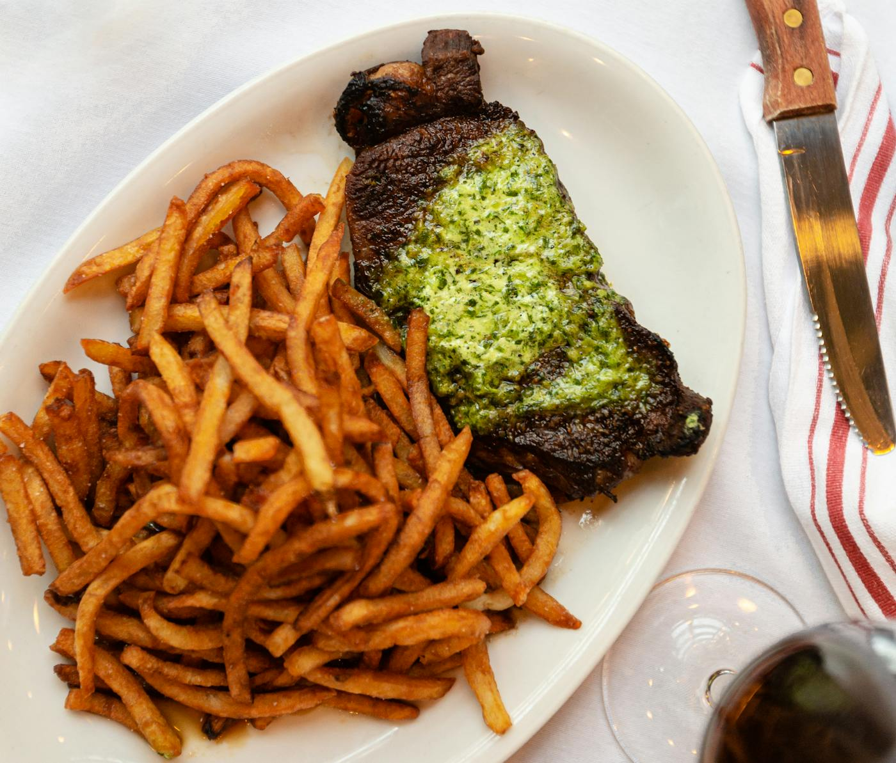
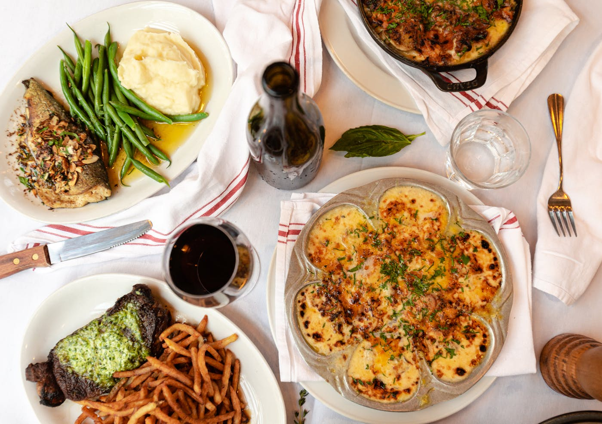
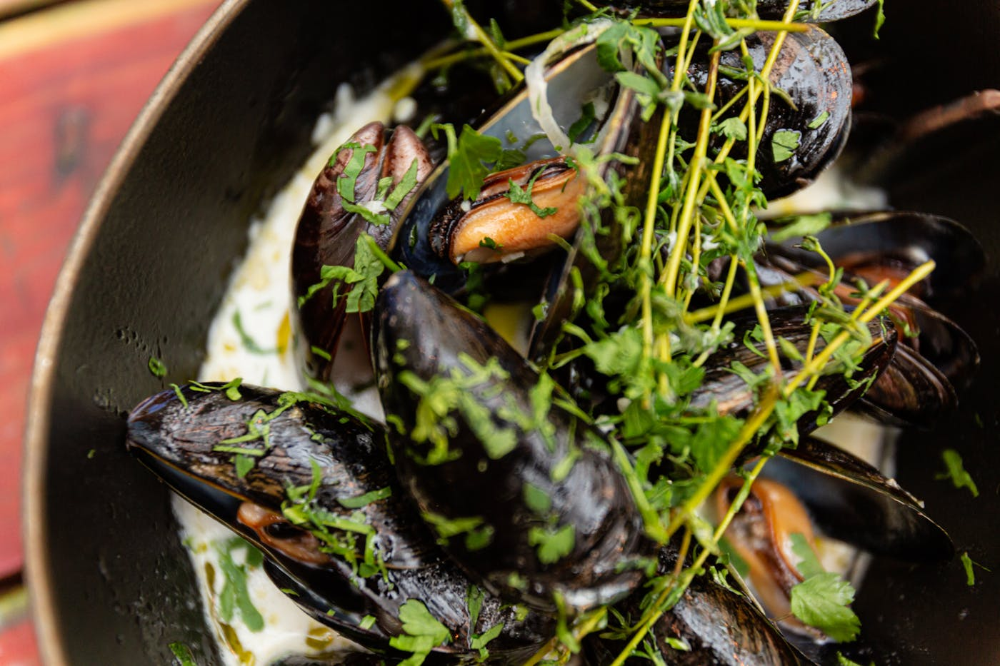
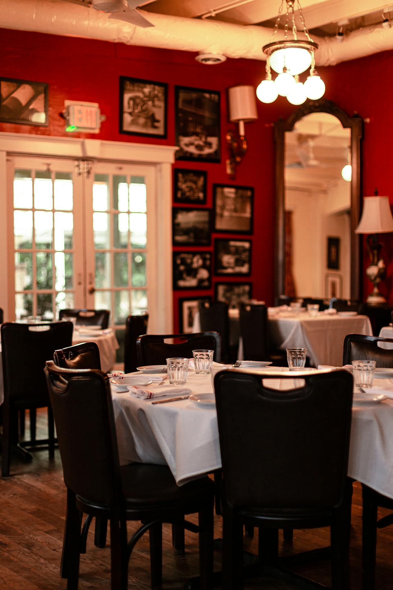
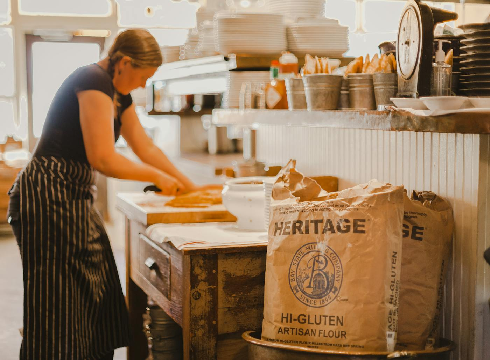
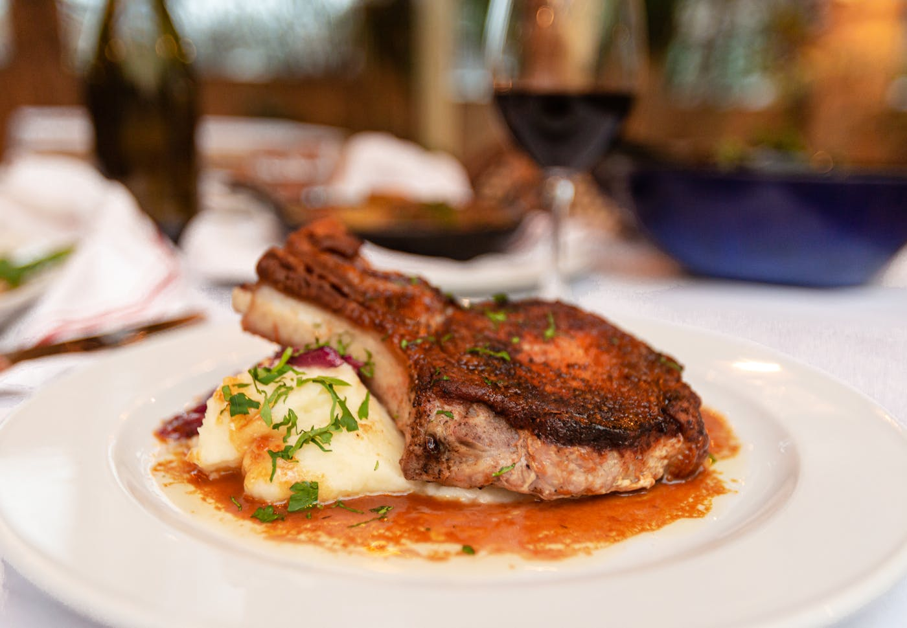

Fruits de mer
French classics with a focus on fresh seafood — oysters, moules frites, poisson du jour — and a wine list worth lingering over.
2010 Hillsborough Rd · Durham, NC
From the moment you step through the doors of this authentic French bistro, you’re transported — fruits de mer, steak frites, carefully chosen wine, and Sunday brunch on Hillsborough Road.
Why this preview
vinrougerestaurant.com works — but OpenTable, Toast gift cards, phone, and faith@ get buried behind heavy GetBento chrome on phones. This free sample keeps your real reserve link, gift cards, Instagram, Facebook, hours, and photos — just clearer to tap.

The room
Plates
Wine
French classics with a focus on fresh seafood — oysters, moules frites, poisson du jour — and a wine list worth lingering over.

Hanger, New York strip, tartare — maître d’hôtel butter, bleu cheese, or au poivre. The Durham classic that keeps regulars coming back.

Eggs Bénédictine, challah French toast, croque madame, and mimosas — 10am to 2pm, then dinner service resumes at 5.
In the press
Reserve on OpenTable, call the Hillsborough Road line, or pick up a Toast gift card for someone who loves French classics.